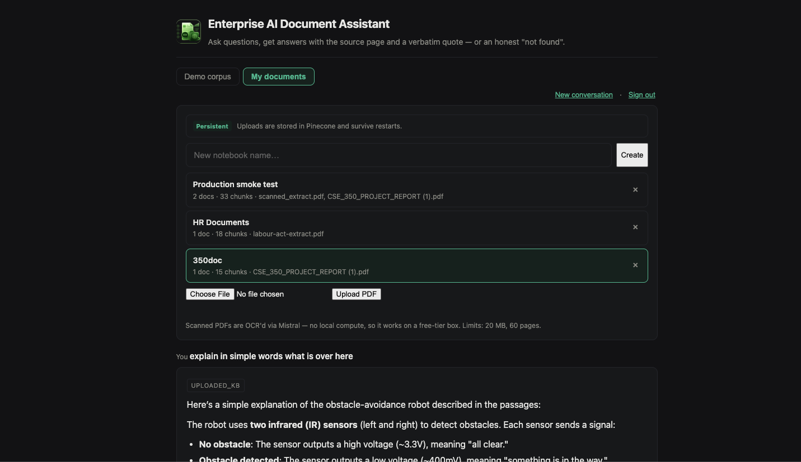
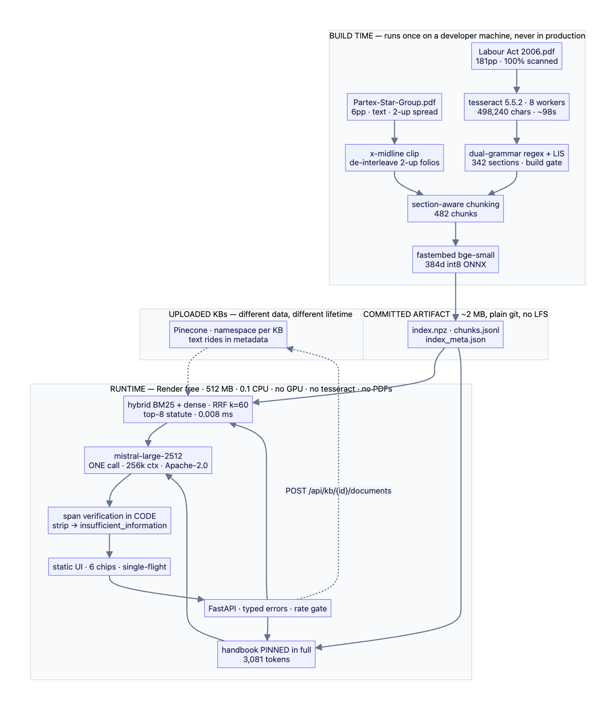

Enterprise AI Document Assistant
Enterprise AI Document Assistant: a RAG-based HR policy compliance assistant over an Employee Handbook and the Bangladesh Labour Act 2006, with verbatim-quote citations, a structural abstention gate and a measured 0.00 false-answer rate.

What it does
An HR policy compliance assistant over the Partex Star Group Employee Handbook and the Bangladesh Labour Act 2006. You ask a question in plain English and get a concise answer carrying the source document, the printed page number and a verbatim quote — or an explicit "not found in the provided documents." It is not a document search box: because the corpus pairs a company handbook with the statute that handbook claims to comply with, it can compare policy against the legal floor and say where the two disagree.
- Natural-language Q&A over an employee handbook and a 181-page labour statute
- Every claim names its source document and printed page, and quotes the text verbatim
- A designed, explicit "not found" instead of a confident guess
- Cross-document compliance reasoning — company policy measured against the statutory floor
- A public demo that needs no sign-in, plus a private upload-and-chat mode for your own PDFs
- Serves from a free 512 MB · 0.1-CPU box with no GPU
Two modes
The live URL opens on the public demo corpus with no sign-in — on the reasoning that a demo behind a login is a demo nobody sees. A second "My documents" mode is sign-in gated: create a notebook, upload any PDF and chat with it, with scanned files OCR'd through a Mistral HTTP call (the only reason runtime OCR is possible on a 0.1-CPU box at all). Auth gates only the upload surface, because uploading is what consumes quota and writes to a store.
- Demo corpus — public, no sign-in: the handbook + Labour Act compliance assistant
- My documents — sign-in required: notebooks, PDF upload, OCR, chat
- Session auth via an HttpOnly, Secure, SameSite cookie; the server stores only a bcrypt hash, in an environment variable — no plaintext, no user table for a single account
- Uploads persist in Pinecone when configured (one namespace per notebook, chunk text riding in the metadata); otherwise they live in memory and the UI says so at upload time, before you spend the effort
- Ingestion is idempotent on
sha256of the bytes — recovery is a re-upload, never a duplicate
Answers that carry their own evidence
The citation path is built so that a fabricated source is structurally impossible rather than merely discouraged. The model never writes a citation string at all: it points at a retrieved chunk, and the quote, the document title and the page number are assembled from that chunk by code.
- Source document + printed page number on every claim
- The quoted snippet is sliced from the retrieved chunk by code, never generated
- Citations are typed objects the whole way out, never markdown strings — so the UI renders from a typed object and the model cannot fabricate a citation
- Printed folio ≠ PDF page: the offset is derived, validated against OCR'd footers and asserted in tests
- Titles come from a curated manifest, never from filenames
It refuses when it should — and that is the hard part
Knowing when to say "I don't know" is the highest-signal requirement here, and the obvious implementation is measurably wrong on this corpus. Similarity thresholding is an anti-signal: the unanswerable question "how many days of paternity leave?" scores 0.413 because it collides with the casual-leave chunk, while two genuinely answerable questions score 0.179 and 0.224. The distributions invert, so any threshold that refuses paternity also refuses "who is the Chairperson?" — which is not bad luck, because a good adversarial question is plausible, and plausible means semantically adjacent. Refusal is therefore structural, in code, with zero extra model calls.
- The handbook is pinned in context in full (3,081 tokens), so its silence is a provable fact rather than a failed top-k
- Every claim must cite a retrieved chunk
- Span verification — the quoted span must actually appear in the cited chunk; claims that fail are stripped
- If every claim is stripped,
insufficient_informationis set by code, not chosen by the model - A refusal returns
200 OK, never a 422 — it is a designed product state, not a transport failure - Statute-side absence is reported as bounded ("I didn't find it in what I retrieved"), never overclaimed as proof
What it actually found
The brief described six documents totalling 20–30 pages. The assets were two documents totalling 187 pages, and five of the six named documents did not exist. The file labelled a company profile is really the Employee Handbook — its PDF metadata title says so — laid out as a landscape two-up spread; the other is 181 pages of pure scanned image with zero extractable text. Then the useful part: the handbook states on its first printed folio that its policies are "in compliance with the applicable labor laws of Bangladesh" — and the other 181 pages are the exact statute that claim refers to. The corpus is a falsifiable claim plus its evidence base, so the assistant can check it:
- Casual leave — handbook 10 days vs s.115 "ten days": at the floor
- Sick leave — 14 days vs s.116(1) "fourteen days": at the floor
- Annual leave — 30 days vs s.117 (≈1 per 18 days worked): exceeds the floor, compliant
- Working hours — 44.5 h/week vs s.100 and s.102: compliant
- Maternity — GAP. Zero mentions in the handbook; ss.45/46 require 16 weeks
- Festival holidays — GAP. The handbook offers only a "Festival Bonus" (a payment); s.118(1) requires 11 paid days
- Overtime — GAP. Zero mentions; s.108 requires 2× the ordinary rate
- Probation carve-out — CONFLICT. "Leave after completion of probation" against the Act's "every worker"
Retrieval
Retrieval is hybrid and deliberately small. The statute is chunked along its own section grammar so that every chunk arrives knowing which section and printed page it came from — which is what makes citation provenance true by construction rather than a formatting convention.
- Hybrid BM25 + dense fused with Reciprocal Rank Fusion (k=60), top-8 over the statute
- Section-aware chunking — 482 chunks across 342 sections, each carrying its own section and page
- The handbook is pinned in full rather than retrieved, because its absence has to be provable
- Exact cosine, no ANN index — 0.008 ms over 482 vectors
- fastembed
bge-small, 384-d int8 ONNX, loaded from a committed file with zero network at boot
Ingestion and OCR — all of it at build time
Every expensive thing happens once, on a developer machine, and ships as a committed artifact. The statute arrived as 181 pages of scanned image with no extractable text whatsoever, so the text had to be manufactured before anything else could work.
- 498,240 characters OCR'd from 181 scanned pages in ~98 seconds (tesseract 5.5.2, 8 workers)
- An x-midline clip de-interleaves the handbook's landscape two-up spread back into printed folios
- Dual-grammar regex + longest-increasing-subsequence recovers 342 sections, behind a build gate that fails the build if a known section goes missing
- Output is a ~2 MB artifact (
index.npz,chunks.jsonl) committed to plain git — no LFS - Measured exclusions, not oversights: the ILO ratification annex OCRs to word salad, and the dot-leader table of contents is lexically near-identical to every real heading with zero answer content — maximally adversarial to BM25
Uploads, and the API surface
Uploading is the one genuinely slow path, so it is modelled as a job rather than a request. A 60-page scanned PDF is an OCR round-trip plus embedding — minutes, not seconds — and a synchronous upload would hit the proxy timeout and show a 502 while the work was still quietly succeeding.
POST /api/kb/{id}/documentsreturns 202 + a job_id; the client polls/api/jobs/{id}for state, progress, pages, chunks and modalityPOST /api/ask→ answer, typed citations,insufficient_information, route, latency and a request id/healthanswers HEAD as well as GET — FastAPI doesn't auto-add HEAD, so@app.getalone returns 405 to every uptime monitor on earth, which is how this was found in production within minutesGET /api/documents→ a curated manifest with real page counts and modality, never the filename- Typed error envelope with real codes: 400 malformed · 413 over 32 MB · 422 semantic · 429 upstream rate limit (echoing
Retry-After) · 503 index not loaded. Never a 200 with a stack trace - Caps of 3 notebooks / 20 MB / 60 pages per upload — the box has 512 MB and the baseline uses ~435 MB, so an unbounded upload is an OOM, and an OOM is a dead URL for whoever is clicking the public demo. The caps protect the demo from the feature
- Interactive docs at
/docs
Build time vs runtime — the line that makes free hosting survivable
Ingestion is an offline batch pipeline; serving is a stateless online service; the boundary between them is the whole architecture. OCR-ing 181 pages on a 0.1-CPU box during a cold start, while a reviewer waits, would blow the timeout, the memory limit and their patience at once — so the runtime image contains no tesseract, no PDFs and no torch. Measured peak RSS is ~435 MB against a 512 MB ceiling, roughly 15% headroom, of which onnxruntime alone is ~280 MB; the tested fallback is to move query embedding to an API call, dropping the image to ~150 MB at the cost of one more request per query. The deployment target changed mid-project too: Hugging Face now requires a PRO subscription for Docker, Gradio and Streamlit Spaces — verified against their API rather than their docs, where creating a Docker Space returns 402 Payment Required — which turned 16 GB into 512 MB and made local embeddings a real constraint rather than a free lunch.
Measured, not asserted
A 30-question harness across four tiers runs against the live pipeline, and the numbers include the ones that don't flatter it. recall@5 is 0.875, the false-answer rate is 0.00 — it has never once answered something it should have refused — and all six unanswerable questions are refused correctly. But it false-refuses answerable questions about a third of the time. That is a deliberate trade: every claim must quote its source and the quote is checked against the raw text, so you never see a confident fabrication, at the cost of sometimes seeing "not found" for something the corpus does contain. On a compliance assistant, under-answering beats mis-answering. The false refusals even have a traceable cause — the corpus is 97% OCR'd, so the source contains real errors ("in a calender year", "Extra-ailowance") and the model, being a careful writer, silently corrects them when quoting, which makes the quote unverifiable. Tolerating one character of drift per long word while requiring numbers and short tokens to match exactly took the false-refusal rate from 0.57 to 0.36. The judge is Gemini rather than Mistral — cross-family, not cross-tier, because models score their own family's output higher; and a committed grep audit proves every "unanswerable" claim against our own OCR before any metric runs. It immediately caught a question I had got wrong: I claimed the corpus was silent on pensions, and pension appears 19 times. The question was removed rather than the audit weakened.
Design decisions, each kept or killed by a measurement
Why RAG when the corpus fits in one window? It does fit — 46.6% of a 262k window, measured with Mistral's own tokenizer rather than chars/4 — so RAG is a defended choice, not a necessity: citation provenance is true by construction when a chunk carries its own page number, whereas context-stuffing invents them. No ANN index: at 482 vectors exact cosine costs 0.008 ms against a ~2-second model call, and reaching for a distributed vector DB to serve 0.74 MB is infrastructure cosplay. No agent: 121 cross-references looked like multi-hop retrieval until I went hunting for a query single-shot actually gets wrong — the example everyone reaches for turns out to be answered inside one section's own sentence — so I wrote no loop. No router: it is a cost optimisation, and on a free tier requests are the scarce resource rather than dollars, so it inverted and was deleted. No reranker: recall@5 is already 1.00 and you cannot rerank above it — worse, the handbook's leave clause is statutory boilerplate lifted from the Act, so a similarity-maximising reranker promotes both near-duplicates in exactly the case where policy most needs distinguishing from statute. No fine-tuning: I can train it, but a live URL is mandatory and free hosting has no GPU; the one fine-tune that survived every constraint — the embedder — died on a measurement, because BM25 already ranks the sick-leave section first. LangChain only for uploads: use the framework where the complexity is foreign, and write it yourself where it is the thing being graded — a generic recursive split measurably merges three distinct leave entitlements into one chunk with one page number, but for a document uploaded thirty seconds from now it is the honest default.
Boundaries the build enforces
A fifteen-line .importlinter contract says src.core may not import fastapi, starlette, uvicorn, mcp, pinecone, mistralai or a text splitter — and it runs in CI and in pytest. That is not a style preference. It is what lets the whole suite run offline against an injected fake generator with no API key and no network, it is why swapping the hosted API for self-hosted Apache-2.0 weights is a one-file change, and it is why exposing this over MCP would be a small adapter rather than a refactor. The claim isn't in the README asking to be believed — the build fails if it stops being true.
Limits, stated up front
Most of these are disclosed rather than discovered, which is the point.
- The Act is legally stale. It is the 2006 Act as published in 2009, materially amended in 2013 and 2018 — including in areas this app reasons about. Every compliance answer opens by naming that scope. This is documented gap analysis to support human HR review; it is not legal advice
- Statute-side absence is bounded, not proved — only top-8 of 482 chunks are in context, so "the Act doesn't address X" means "I didn't find it in what I retrieved." The full-context oracle quantifies that; it does not eliminate it
- Uploaded documents get a weaker pipeline than the demo corpus, and that is honest rather than an oversight — the statute gets a chunker built on its own section grammar because I know that grammar; an arbitrary PDF gets a generic recursive split because I don't. So uploaded citations carry a page number but no section anchor
- The free tier sleeps after 15 minutes idle and takes ~1 minute to wake; an uptime monitor pings
/healthevery 5 minutes to keep it warm. The cold start belongs to the hosting plan, not the app — the container boots in ~2s and/healthanswers in ~160 ms once warm - n=30 → 95% CI ≈ ±10.7pp. An honest wide interval beats a fake tight one
By the numbers
Schematic & figures

Tech stack & key skills
Core tools, methods and skills demonstrated in this project: